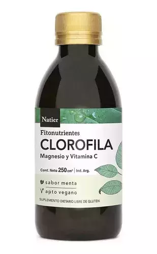

Productos
Glicinato de magnesio

- ➥Mejora el sueño: Calma al sistema nervioso y relaja los músculos, ayudando a un descanso más profundo y reparador.
- ➥Reduce el estrés y ansiedad: Ayudan a disminuir los niveels de cortisol, favoreciendo el equilibrio emocional.
- ➥Salud muscular y nerviosa: Es clave para la contracción y relajación muscular normal. Previene calambres y espasmos.
- ➥Soporte muscular y nerviosa: Regula los niveles de glucosa en la sangre y apoya al funcionamiento rítmico del corazón.
- ➥Fortalecimiento óseo: Regula el calcio, siendo fundamental para mantener a los huesos fuertes.
Modo de consumo🛡️
Disolver la porción indicada en la etiqueta,
utilizando la cuchara dosificadora incluida dentro del envase.
Mezclarlo con agua o alguna otra bebida.
Consumirlo 30min antes de dormir
Golden Mix Moringuero

- ➥Acción antiinflamatoria: Reduce la inflamación crónica en el cuerpo, ayudando a aliviar dolores articulares y musculares.
- ➥Fortalece el sistema inmune: Refuerza las defensas naturales del organismo, gracias a su Vitamina C y la cúrcuma.
- ➥Apoyo digestivo: Ayuda al transito intestinal, mejora la digestión y reduce molestias estomacales e hinchazón.
- ➥Energia y vitalidad: Gracias a la moringa, por sus nutrientes combate el cansancio y brinda energía durante todo el día.
Modo de consumo🛡️
Tomar 1 a 2 capsulas al dia con agua, preferiblemente durante las comidas.
Golden Milk

- ➥Acción antiinflamatoria: Reduce los dolores articulares y musculares, lo cual es útil para las personas con artritis.
- ➥Refuerzo inmunológico: Fortalecen las defensas y previene resfriados.
- ➥Mejora la digestón: Gracias al jenjibre y la pimienta negra, alivia la hinchazón abdominal y los gases.
- ➥Bienestar mental y sueño: Si se consume tibia por la noche, ayuda a relajar el cuerpo y la mente, combatiendo el insomnio y mejorando el descanso.
- ➥Poder antioxidante: Combate el estrés y protege las células del envejecimiento prematuro.
Modo de consumo🛡️
Calienta una taza de leche (vacuna) o bebida vegetal (almendras, coco o avena), Luego agrega el polvo de Golden Milk a la bebida caliente. Le puedes añadir miel o stevia a gusto... Por ultimo mezcla bien hasta que el polvo se integre por completo. Se recomienda tomarlo 30 y 60min antes de dormir.
Hibiscus Complex

- ➥Acción antioxidante: Combate el envejecimiento celular y el daño oxidativo.
- ➥Salud digestiva: Ayuda a desinflamar, mejora e tránsito intestinal y favorece la digestión, siendo útil después de las comidas pesadas.
- ➥Salud cardiovascular: Es muy valorado por su capacidad de ayudar a regular la presión arterial y los niveles de colesterol en sangre.
- ➥Efecto diurético y detox: Elimina toxinas y liquidos retenidos, promoviendo una sensación de ligereza corporal.
- ➥Apoyo metabólico: El té verde acompaña el metabolismo de forma constante, ayudando a la quema de grasas y al control de peso.
Modo de consumo🛡️
Consumir de2 a 3 comprimidos por día. Tomarlos preferentemente con las comidas. No consumir en caso de tener presión arterial baja ya que el hibisco puede reducirla aún más.
Triple maca vigorizante

- ➥Energía y vitalidad: Proporciona un aumento en la energía física y mental, ayudando a combatir el descanso y la fatiga.
- ➥Rendimiento sexual: Actúa como un vigorizante que estimula el libido y puede mejorar la función sexual tanto en hombres como mujeres.
- ➥Equilibrio hormonal: Regula las hormonas, siendo beneficioso para aliviar sintomas de la menopausia y mejorar la fertilidad.
- ➥Rendimiento cognitivo: Contribuye a mejorar la memoria, el enfoque mental y la capacidad de aprendizaje.
- ➥Adaptógeno: Ayuda al cuerpo a gestionar mejor el estrés y fortalece el sistema inmunológico.
Modo de consumo🛡️
Leer cuántas capsulas tomar en el envase. Es preferible consumirla por la mañana o al mediodia, para aprovechar su efecto energizante y evitar que interfiera en el sueño nocturno.
Semillas de palta en polvo

- ➥Salud cardiovascular: Reduce el colesterol "malo"(LDL) y regula los triglicéridos.
- ➥Sistema inmunológico: Refuerza las defensas naturales del cuerpo, gracias a sus Vitaminas y compuestos fenólicos.
- ➥Digestión y peso: Mejora el transito intestinal, combate la inflamación y favorece la pérdida de peso al aumentar la saciedad.
- ➥Propiedades antioxidantes: Neutraliza los radicales libres, lo que podría retardar el envejecimiento celular.
Modo de consumo🛡️
Se puede consumir en infusiones, en acompañamiento de comidas, Batidos, yogures y incluso en el mate.
Clorofila

- ➥Salud digestiva: Calma la acidez estomacal y combate procesos inflamatorios.
- ➥Desintoxicación y PH: Al actuar como un desintoxicante general, elimina toxinas y metales pesados del sistema digestivo, tambien ayuda a regular el PH.
- ➥Energía y apariencia: Combate la fatiga y el estrés oxidativo, aportando una mayor energia natural y mejorando la apariencia de la piel.
- ➥Acción refrescante: Gracias a su combinación con sabor a menta, ayuda a neutralizar el mal aliento (halitosis).
- ➥Antioxidante: Gracias a su Vitamina C, protege las células contra el daño de los radicales libres.
Modo de consumo🛡️
Consumir de 1 a 2 tomas diarias de 5ml (1 cucharada),
solas o diluidas en agua o jugos naturales.
TOMA EN AYUNA... Si buscas efecto antioxidante y
un plus de energía para arrancar el día.
TOMA ANTES O DESPUÉS DE LAS COMIDAS...si buscas mejorar la digestión,
calmar la acidez estomacal o evitar la pesadez.
Vinagre de Manzana

- ➥Digestón: Alivia la inflamación abdominal y mejora la salud gastrointestinal.
- ➥Control glucémico: Ayuda a moderar y controlar los niveles de azúcar en la sangre, mejorando la sensibilidad a la insulina.
- ➥Control del apetito: Genera una mayor sensación de saciedad, lo que reduce la ingesta calórica y favorece el control de peso.
- ➥Antioxidante y defensas: Al tener Vitamina C incluido, actúa como un potente depurativo y refuerza el sistema inmunitario.
- ➥Salud cardiovascular: Tiene un efecto positivo sobre los niveles de colesterol y triglicéridos en sangre.
Modo de consumo🛡️
Consumir 1 a 3 cucharadas (de 5ml cada una) disueltas en un vaso de agua. Se puede consumir en cualquier momento del día o 30min antes/después de las comidas principales.
Vinagre de sidra de manzana en capsulas

- ➥Control glucémico: modera los picos de azúcar en sangre después de comer.
- ➥Soporte intestinal: Aporta enzimas digestivas y mejora el tránsito intestinal.
- ➥Estrategia de peso: Promueve la saciedad ayudando al control calório.
- ➥Acción antioxidante: Su contenido de Vitamina C refuerza las defensas del organismo.
Modo de consumo🛡️
Ingreir 1 cápsula al día acompañado con agua. Consumir 30min antes o después de alguna de las comidas principales(almuerzo o cena).
Jugo de Aloe vera Sistema digestivo

- ➥Depurativo y Detox: Limpia el aparato digestivo y elimina toxinas acumuladas.
- ➥Regulador intestinal: Favorece el transito intestinal y ayuda en casos de estreñimiento, pesadez o inflamación abdominal.
- ➥Alivio de síntomas: Mejora condiciones como gastritis, acidez y reflujo, debido a sus propiedades antiinflamatorias y alcalinizantes.
- ➥Salud hepatobiliar: Facilita la expulsión de bilis retenida en la vesícula y estimula la secreción biliar.
- ➥Inmunológico: Refuerza el sistema inmunológico y aumenta las defensas naturales del cuerpo.
- ➥Riqueza Nutricional: Aporta aminoácidos esenciales, minerales (calcio, magnesio, potasio y hierro) y Vitaminas (A, C, B1, B2, B6 y B12).
Modo de consumo🛡️
Ingerir de 1 a 2 cdas diarias (o tapitas)
diluidas en agua o algun jugo natural.
Se puede tomar en ayunas, 30min antes o después
de las comidas principales.
Omega-3 Vegetal

- ➥Salud cardiovascular: Regula los niveles de colesterol y triglicéridos, además de contribuir al control de la presión arterial.
- ➥Acción antiinflamatoria: Gracias a sus propiedades, son útiles en procesos inflamatorios generales y articulares.
- ➥Función cognitiva: Previene el deterioro cognitivo y mejora la comunicación entre neuronas.
- ➥Piel y digestión: Mejora la apariencia de la piel y favorece los procesos digestivos e intestinales.
- ➥Redimiento físico: Ayuda en la recuperación y rendimiento muscular tras el ejercicio.
Modo de consumo🛡️
Ingerir 1 cda de 5ml (equivalente a la tapita del envase) 1 vez por día. Se recomienda tomarlo 30min antes o después de las comidas prinicpales para optimizar su absorción.
Aceite de prímula

- ➥Equilibrio hormonal: Reduce el balance entre estrógenos y progesterona.
- ➥Salud hormonal: Alivia sintomas del síndrome premenstrual (como hinchazón, irritabilidad y calambres) y de la menopausia (sofocos, sequedad vaginal e insomnio).
- ➥Acción antiinflamatoria: Reduce los dolores musculares y articulares.
- ➥Cuidado de la piel y cabello: Ayuda a combatir el acné y fortalece el cabello.
- ➥Sistema inmunológico: Actúa como un potenciador de las defensas naturales del organismo.
Modo de consumo🛡️
Ingerir 1cda diaria (aprox. 5ml o una tapita del envase). Tomarlo en ayunas o 30min antes/después de las comidas principales.
Jugo de Aloe Vera máximas defensas

- ➥Sistema inmunológico: Refuerza las defensas naturales del cuerpo.
- ➥Salud digestiva: Regula el tránsito intestinal y favorece la restauración de la muscosa gástrica.
- ➥Desintoxicación: Colabora en la eliminación de toxinas y mejora la absorción de nutrientes.
- ➥Aporte nutricional: Contiene Vitaminas (A,C,B1,B6 y B12), aminoácidos esenciales y minerales (calcio, magnesio, potasio,zinc e hierro).
Modo de consumo🛡️
Ingerir de 1 a 2cdas soperas (aprox. 5ml por porción) por día, diluido en agua o algun jugo natural. Consumir 30min antes o después de las comidas principales.
Centella Asiática

- ➥Salud cutánea: Facilita la formación de colágeno, lo que aporta firmeza y elasticidad a la piel. Acelera la reparación de tejidos y la cicatrización.
- ➥Control de Celulitis: Gracias a sus propiedades, combate la celulitis y mejora la textura de la piel.
- ➥Soporte circulatorio: Alivia la sensación de piernas cansadas, varices y ademas al mejorar el tono de las paredes venosas.
- ➥Efecto detox: Contiene funciones depurativas y antioxidantes que protegen la piel de los radicales libres.
- ➥Sistema nervioso: Se considera un tónico que ayuda a mantener la concentración y la memoria.
Modo de consumo🛡️
Ingerir de 1 a 2 cásulas diarias. Se sugiere tomarlas antes de las comidas principales. Se puede consumir de forma continua, ya que no requiere periodos de descanso obligatorio.
Hierro Quelado

- ➥Combate la anemia: Estimula la producción de globulos rojos.
- ➥Aumenta la energía: Reduce el cansancio físico y mental.
- ➥Refuerza defensas: Fortalece el funcionamiento del sistema inmune.
Modo de consumo🛡️
Ingerir 1 capsula diaria.
Consumir 30min antes o después de cualquiera de sus pricipales comidas.
Para mejorar la absorción, puede tomar junto con Vitamina C
(como jugo de cítricos).
Jugo de uva Tinto 100% natural

- ➥Salud cardiovascular: Protege al corazón y reduce la oxidsción dañina de lípidos (colesterol LDL).
- ➥Poder antioxidante: Combate el envejecimiento celular y el daño de los radicales libres.
- ➥Bbeida energética natural: Se considera una fuente de energía saludable, ideal para deportistas o cualquier momento del día.
Modo de consumo🛡️
Se consume fresco y para obtener una opción más ligera, se puede diluir con agua o agua con gas... Apto para todas las edades, desde niños hasta adultos mayores
Tintura madre Melisa

- ➥Relajante y sedante suave: Reduce estados de ansiedad, estrés y nerviosismo.
- ➥Mejora el sueño: Favorece el descanso profundo y ayuda a combatir el insomnio de manera natural.
- ➥Aliado digestivo: Alivia cólicos, gases, pesadez estomacal e indigestión nerviosa.
Modo de consumo🛡️
Tomar entre 15 a 20 gotas diluidas en un poco de agua. Se puede consumir de 1 a 3 veces al día. Para mejorar el sueño, tomarlo una dosis entre 30 y 60min antes de acostarse.
Tintura madre Garcinia Cambogia

- ➥Control del apetito: Reduce los antojos y la asniedad por comer.
- ➥Bloquea grasas: Evita que los azúcares se transformen en tejido adiposo.
- ➥Usa reservas: Estimula al cuerpo a quemar la grasa acumulada.
- ➥Sin nerviosismo: No altera el sistema nervioso ni quita el sueño.
Modo de consumo🛡️
Consumir de 15 a 20 gotas en un vaso de agua. 3 veces por dia, entre 30 y 60min antes de las comidas principales.
Tintura Madre Fucus

- ➥Bajar de peso: Activa tu metabolismo para que quemes grasa de manera más eficiente.
- ➥Control de apetito: Se expande en el estomago y te da una sensación de llenado que reduce el hambre.
- ➥Evita retención de liquidos: Funciona como un diurético natural que te ayuda a deshincharte.
- ➥Mejora la digestión: Actua como un laxante suave, ayudando a regular el tránsito intestinal.
- ➥Aporta energía: Al estimular el metabolismo, te ayuda a sentir menos cansancio durante el día.
Modo de consumo🛡️
Consumir de 20 a 60 gotas diluidas en agua. Consumir antes de las comidas para aprovechar su efecto saciante.
Tintura Madre Ortiga

- ➥Depurativa: Purifica el organismo eliminando toxinas acumuladas.
- ➥Diurética: Estimula la producción de orina, reduce la retención de liquidos y previene cálculos renales.
- ➥Desinflamatoria: Alivia dolores articulares causados por artritis, artrosis y reumatismo.
- ➥Bienestar prostático: Colabora en el tratamiento y alivio de moestias por hipertrofia protática benigna.
- ➥Antialérgica: Refuerza defensas y mitiga síntomas de rinitis o alergias estacionales.
Modo de consumo🛡️
Diluir en agua entre 20 y 30 gotas. Generalmente se toma 2 a 3 veces al día, preferentemente alejado de las comidas.
Tintura madre Sen Hojas

- ➥Alivio del estreñimiento: Estimula el colon para facilitar la evacuación inestinal de forma rápida.
- ➥Ablandamiento de heces: Reduce la absorción de agua para permitir una eliminación menos dolorosa.
- ➥Acción depurativa: Favorece la expulsión de toxinas y desechos acumulados en el sistema digestivo.
- ➥Efecto predecible: Actúa habitualmente entre 6 y 12hs después de su ingesta nocturna.
Modo de consumo🛡️
Tomar entre 10 a 20 gotas diluidas en un vaso de agua. Tomarla por la noche, antes de acostarse.
Tintura Madre Cardo Mariano

- ➥Protege al hígado: Repara las células hepaticas dañadas por toxinas, alcohol o medicamentos.
- ➥Mejora la digestión: Estimula la producción de bilis, facilitando la digestión de grasas y aliviando la pesadez.
- ➥Desintoxica el organismo: Colabora de manera activa en la eliminación de impurezas y desechos del cuerpo.
- ➥Es antioxidante: Combate los radicales libres que causan el envejecimiento celular.
Modo de consumo🛡️
Tomar 20 gotas(1ml) en un vaso con agua, de 1 a 3 veces por día.
Tintura Madre Valeriana

- ➥Combate el insomnio: Ayua a reconciliar el sueño rápido.
- ➥Reduce la ansiedad: Calma el estrés y los nervios.
- ➥Alivia tensiones: Relaja los espasmos musculares y cólicos
Modo de consumo🛡️
Tomar 20 gotas(1ml)en un vaso con agua,
de 1 a 3 veces por día.
Para mejorar el descanso se toma cerca del horario de descanso nocturno.
Tintura Madre pasionaria

- ➥Reduce el estrés: Alivia la ansiedad, los nervios y la tensión diaria.
- ➥Combate el insomnio: Favorece un sueño profundo, relajado y reparador.
- ➥Alivia tensiones: Ayuda a relajar espasmos y dolores musculares por nerviosismo.
Modo de consumo🛡️
Tomar 20 gotas diluidas en un vaso de agua.
Tomar de 1 a 3 veces al día.
Para trastornos de sueño, tomar antes de acostarse.
Caldo de huesos vacuno

- ➥Articulaciones: Fortalece cartílagos, tendones y huesos.
- ➥Piel y cabello: Aporta colágeno para dar elasticidad a la piel y fortalecer uñas y cabello.
- ➥Digestión: Protege y repara la mucosa del intestino.
- ➥Defensas: Aporta nutrientes que colaboran con el sistema inmunológico.
Modo de consumo🛡️
Consumir 2 comprimidos diarios, preferentemente en el desayuno.
Cáscara de huevo

- ➥Fortalece los huesos: Aporta calcio natural de alta absorción para prevenir la debilidad ósea.
- ➥Protege las articulaciones: Reduce el dolor y la rigidez articular.
- ➥Mejora la función muscular: El magnesio y calcio optimizan la contracción de los músculos.
- ➥Aporta energía celular: Contiene Coenzima Q10 y Vitamina B12 para el metabolismo energético.
Modo de consumo🛡️
Consumir 2 comprimidos diarios, preferentemente en el desayuno.
Caldo de huesos marino

- ➥Articulaciones y huesos: Fortalece la estructura ósea, reduce dolores articulares y mejora la movilidad.
- ➥Salud intestinal: Protege la mucosa del sistema digestivo y ayuda a aliviar trastornos como la gastritis.
- ➥Estética: Aporta colágeno que mejora la elasticidad de la piel y fortalece el cabello y las uñas.
- ➥Defensas: Aporta minerales esenciales que refuerzan el sistema inmunológico.
Modo de consumo🛡️
Consumir 2 comprimidos diarios, preferentemente en el desayuno.
Aceite de Romero

- ➥Hidrata profundamente: Mantiene la humedad de la piel.
- ➥Nutre intensamente: Aporta nutrienetes esenciales para el tejido cutáneo.
- ➥Aporta firmeza: Ayuda a tonificar y mejorar la elasticidad.
- ➥Efecto astringente: Útil para equilibrar la piel y el cuero cabelludo.
- ➥Ideal para masajes: Facilita el deslizamiento y promueve la relajación corporal.
Modo de consumo🛡️
No consumir por vía oral... Para aplicacíon se utiliza una pequeña cantidad, ya sea en el cabello, o en la piel.
Aceite de orégano

- ➥Combate infecciones: Destruye bacterias, hongos (como la cándida) y virus.
- ➥Sube defensas: Fortalece el sistema inmunitario de forma natural.
- ➥Alivia la respiración: Calma la tos y limpia las vías aéreas.
- ➥Mejora la digestión: Reduce gases, pesadez y protege el estómago.
- ➥Sana la piel: Elimina hongos en uñas, acné y verrugas.
- ➥Reduce inflamación: Calma dolores musculares y articulares leves.
Modo de consumo🛡️
Ingrerir 4 gotas, 2 veces al día, 30min antes o despés
de las comidas peincipales.
Puedes mezclarla con agua o colocarlas bajo la lengua.
Para uso externo colocar 4 a 8 gotas de forma externa.
Zeolita extracto liquido

- ➥Elimina toxinas: Atrapa y expulsa del cuerpo metales pesados.
- ➥Efecto antioxidante: Limpia los radicales libres del organismo.
- ➥Regula el PH: Ayuda a equilibrar la acidez corporal.
- ➥Refuerza defensas: Favorece el sistema inmunológico y digestivo
Modo de consumo🛡️
Se recomiendas gotas en cantidades pequeñas, se suele aumentar la cantidad,
distribuida en varias tomas diarias durante un periodo de 4 a 6 semanas.
Disolver las gotas en agua o en jugos naturales.
Es fundamental batirlo con energía antes de usarlo.
Lax Fibras

- ➥Regula el tránsito: Alivia el estreñimiento de forma suave y natural.
- ➥Aumenta la motilidad: Favorece los movimientos del intestino.
- ➥Aporta fibra: Mejora la salud de la flora digestiva.
- ➥Efecto laxante suave: Ablanda las heces facilitando la evacuación.
Modo de consumo🛡️
Tomar 1 comprimido diario, 1 hora antes de acostarse, con un vaso de agua o jugo colmado.